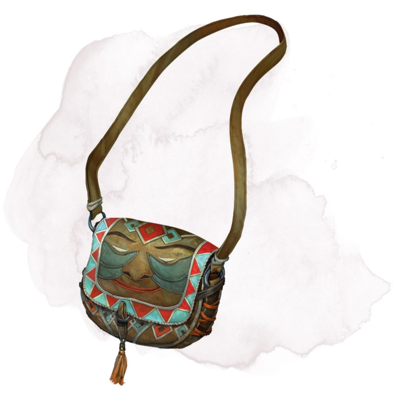

Sac sans fond
[ Bag of Holding ]
Objet merveilleux, peu commun
Ce sac de toile a un espace intérieur beaucoup plus grand que ses dimensions extérieures, environ 60 cm de diamètre à l'ouverture et 1,20 m de profondeur. Le sac peut contenir jusqu'à 250 kg, tout en ne dépassant pas un volume de 1,20 m x 1,20 m x 1,20 m. Le sac pèse 7,5 kg, indépendamment de son contenu. Récupérer un élément du sac demande une action.
Si le sac est surchargé, percé ou déchiré, il se rompt et est détruit, et son contenu est dispersé sur le plan Astral. Si le sac est retourné, son contenu se déverse, en bon état, mais le sac doit être remis à l'endroit pour pouvoir être utilisé de nouveau. Si des créatures qui respirent sont placées dans le sac, elles ne peuvent survivre qu'un nombre de minutes égal à 10 minutes divisé par le nombre de créatures (minimum 1 minute), après quoi elles commencent à suffoquer.
Placer un sac sans fond dans un espace extradimensionnel créé par un havresac magique d'Hévard, un puits portatif ou un objet similaire, détruit instantanément les deux objets et ouvre un portail sur le plan Astral. Le portail s'ouvre là où le premier objet a été placé à l'intérieur de l'autre. Toute créature dans un rayon de 3 mètres autour du portail est aspirée par celle-ci et se retrouve à un endroit aléatoire sur le plan Astral. Puis le portail se referme. Celui-ci est à sens unique et ne peut pas être réouvert.
Si le sac est surchargé, percé ou déchiré, il se rompt et est détruit, et son contenu est dispersé sur le plan Astral. Si le sac est retourné, son contenu se déverse, en bon état, mais le sac doit être remis à l'endroit pour pouvoir être utilisé de nouveau. Si des créatures qui respirent sont placées dans le sac, elles ne peuvent survivre qu'un nombre de minutes égal à 10 minutes divisé par le nombre de créatures (minimum 1 minute), après quoi elles commencent à suffoquer.
Placer un sac sans fond dans un espace extradimensionnel créé par un havresac magique d'Hévard, un puits portatif ou un objet similaire, détruit instantanément les deux objets et ouvre un portail sur le plan Astral. Le portail s'ouvre là où le premier objet a été placé à l'intérieur de l'autre. Toute créature dans un rayon de 3 mètres autour du portail est aspirée par celle-ci et se retrouve à un endroit aléatoire sur le plan Astral. Puis le portail se referme. Celui-ci est à sens unique et ne peut pas être réouvert.
Dungeon Master´s Guide (SRD)
